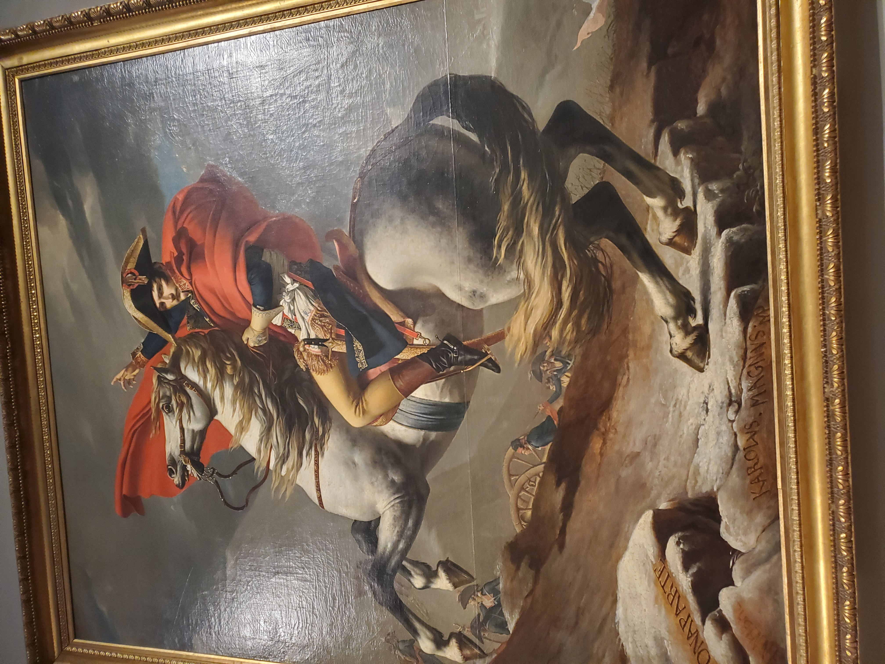

Sources
Historiography- Historians on History By: John Tosh
Tosh, J. (Ed.). (2014). Historians on history. Routledge.
What is historical bias?
Lang, S. (1993). What is bias? Teaching history, 73(9), 13.
McCullagh, C. B. (2000). Bias in historical description, interpretation, and explanation. History and Theory, 39(1), 39-66.
Why do we study History? (Because it is all connected)
Napoleon Crossing the Alps by: Jacques-Louis David (My own photograph) 
The Rosetta Stone, The British Museum (My own photograph)
More examples: Why should you study history?
"https://www.youtube.com/watch?v=GmtMpQAIKjQ"